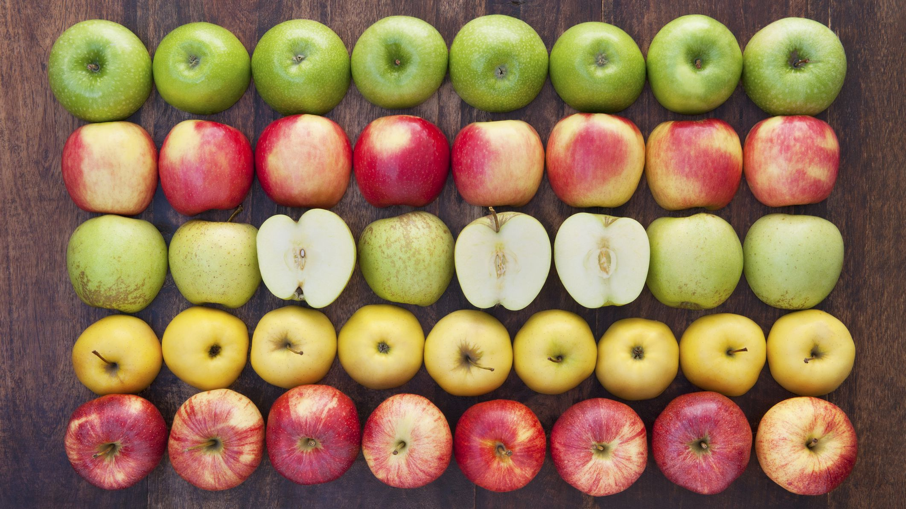

Boiled Apples

Description
This is a recipe for boiled apples. Why you'd want to boil apples is beyond me. Maybe you want to make
applesauce, or maybe you want to make them all mushy to throw at people. I don't know. But with this
recipe you'll be able to make those hard hard apples really soft and mushy and explosive upon
Ingredients
- Apples
- Water (or any kind of liquid - some weirdos use milk)
- Saucepan
- Stove-top or a fire. You could make this over a fire while camping. I don't know why
you'd want to.
- Step 1: Put all of the apples in front of you;
- Step 2: Say "I'm going to boil you" to the apples;
- Step 3: Put the apples in the saucepan;
- Step 4: Put the water or whatever liquid you wanna use into the saucepan;
- Step 5: Boil that shit;
- Step 6: Do whatever you want.